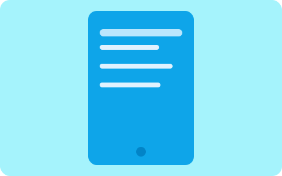

Clinical Workflow Assistant Platform
Built and supported an internal workflow solution to streamline repetitive operational tasks and improve process clarity for hospital teams.
 MD TORIKUL ISLAM HIRA
MD TORIKUL ISLAM HIRA
Production-focused case snapshots from healthcare, media, and enterprise IT workflows. Each project reflects practical delivery, operational reliability, and measurable process improvement.
Built and supported an internal workflow solution to streamline repetitive operational tasks and improve process clarity for hospital teams.
Implemented a reliability-focused support workflow for fast-paced broadcast operations, improving issue visibility and response coordination.
Designed AI-assisted automation pipelines to reduce manual processing overhead and standardize quality across recurring tasks.

Created support-oriented tooling and dashboards to strengthen stability, improve observability, and speed up operational decision-making.
Looking for an AI-driven developer and IT specialist for production-grade work? Let’s discuss your goals and system requirements.